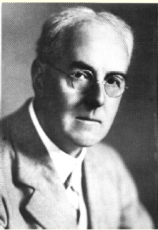
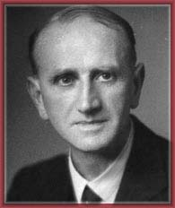

| Choisissez votre langue ! | Choose your language ! |
La plupart des suites convergent vers des constantes mathématiques (π,e, √2,etc..), où des fractions de ces constantes, et on est tenté de les utiliser pour calculer ces constantes avec une précision de plus en plus grande.
La précision obtenue dépend bien entendu en premier lieu de la vitesse de convergence de la suite. Mais elle dépend également d'autres facteurs comme la difficulté de calculer le terme de rang n de la suite, nécessitant parfois n iétérations comme dans le cas de la suite d'Euler (1+1/n)n que nous avons déjà rencontrée plusieurs fois, ou bien la précision du type numérique utilisé pour les calculs ( , double, etc...).
Nous nous préoccupons ici des améliorations que l'on peut obtenir en augmentant la vitesse de convergence d'une suite initiale par des procédés relativement simples (transformations linéaires).
Les conditions d'applications de ces procédés sont assez restrictives, elles supposent parfaitement connu le mode de convergence de la suite initiale.
Comparaison des vitesses de convergence
Most sequences converge towards mathematical constants (π,e, √2,etc..), or fractions of these constants, and one is tempted to use them to calculate these constants with greater and greater precision.
The precision obtained depends of course in the first place on the speed of convergence of the sequence. But it also depends on other factors such as the difficulty of calculating the term of rank n of the sequence, sometimes requiring n iterations as in the case of the Euler sequence (1+1/n)n which we have already encountered several times, or the precision of the numeric type used for the calculations ( , double, etc...).
We are concerned here with the improvements that can be obtained by increasing the speed of convergence of an initial sequence by relatively simple processes (linear transformations).
The conditions of application of these processes are rather restrictive, they suppose perfectly known the mode of convergence of the initial sequence.
Comparison of convergence speeds
On suppose en outre que pour n suffisamment grand on a toujours un≠a.
Dans ces conditions on dit que la suite (vn) converge vers a 'plus rapidement' que la suite (un) ssi:
\( \displaystyle {\lim_{n\rightarrow \infty }}\frac{v_{n}-a}{u_{n}-a}=0 \)
We further assume that for n sufficiently large we always have un≠a.
Under these conditions we say that the sequence (vn) converges to a 'faster' than the sequence (un) iff:
\( \displaystyle {\lim_{n\rightarrow \infty }}\frac{v_{n}-a}{u_{n}-a}=0 \)
Exemple:
Un des procédés pour accélérer la convergence d'une suite est l'extraction. Prenons par exemple la suite d'Euler un=(1+1/n)n dont la convergence est manifestement lente. Si nous posons vn=u2n
, on vérifie immédiatement qu'on obtient une suite dont la convergence est géométrique de vitesse 1/2. Cependant cette accélération est purement factice, tout à fait illusoire, puisque le coût du calcul du terme de rang n de la suite d'Euler est en O(n) (produit de n facteurs) donc le coût du calcul de vn est en O(2n). Il faut donc se tourner vers des procédés qui augmente la vitesse de convergence 'à coût constant'.
Le point de départ de notre développement est le résultat suivant.
Example:
One of the processes to accelerate the convergence of a sequence is extraction. Take for example the Euler sequence un=(1+1/n)n the convergence of which is manifestly slow. If we set vn=u2n
, we immediately check that we obtain a sequence the convergence of which is geometric with speed 1/2. However, this acceleration is purely artificial, completely illusory, since the cost of calculating the term of rank n of the Euler sequence is in O(n) (product of n factors) therefore the cost of calculating vn is in O(2n). It is therefore necessary to turn to processes which increase the speed of convergence 'at constant cost'.
The starting point of our development is the following result.
\( \displaystyle {\lim_{n\rightarrow \infty }}\frac{u_{n+1}-a}{u_{n}-a}=k \)
Alors la suite (vn) définie par:\( \displaystyle v_{n}=\frac{u_{n+1}-k.u_{n}}{1-k} \)
converge également vers a plus rapidement que u.\( \displaystyle {\lim_{n\rightarrow \infty }}\frac{u_{n+1}-a}{u_{n}-a}=k \)
Then the sequence (vn) defined by:\( \displaystyle v_{n}=\frac{u_{n+1}-k.u_{n}}{1-k} \)
also converges to a faster than u.\( \displaystyle \frac{v_{n}-a}{u_{n}-a}=\frac{1}{1-k}\times \frac{u_{n+1}-a}{u_{n}-a}-\frac{k}{1-k} \)
La méthode de Richardson-Romberg
The method of Richardson-Romberg
| Lewis Fry Richardson(1909-2003) UK | Werner Romberg (1880-1953) DE |
|  | |
| Image Wikipédia | Image HNMI(USA) |
Plus précisément:
More precisely:
un=a+λkn+O(hn) où on a |h|<|k|<1.
Posons:
\( \displaystyle v_{n}=\frac{u_{n+1}-k.u_{n}}{1-k} \)
alors vn-a=O(hn)un=a+λkn+O(hn) where we have |h| <|k| <1.
Let's set:
\( \displaystyle v_{n}=\frac{u_{n+1}-k.u_{n}}{1-k} \)
Then vn-a=O(hn)Posons wn=un-a-λkn de sorte que wn=O(hn).
Alors
\( \displaystyle v_{n}-a=\frac{w_{n+1}-k.w_{n}}{1-k} \)
\( \displaystyle \left | v_{n}-a \right |\leqslant \frac{\left | w_{n+1} \right |+k\left | w_{n} \right |}{1-k}\leqslant \frac{A\left ( \left | h \right |+\left | k \right | \right )}{1-k}\times \left | h \right |^{n}\leqslant M\left | h \right |^{n} \)
Voici un programme Python qui applique le procédé de Richardson Romberg à la suite d'Archimède:un=2nsin(π/2n)
Nous prendrons pour acquis que la suite converge géométriquement avec la vitesse 1/4, chose que nous n'avons fait que vérifier empiriquement (une démonstration rigoureuse est fondée sur le développement en série entière de la fonction sinus). Nous admettrons également que l'accélérée de Richardson de cette suite converge avec la vitesse 1/16. Nous avons ici enchainé deux processus d'accélération. Nous verrons par la suite qu'il existe un moyen d'itérer ces procédés sans connaître les vitesses de convergence.
Let wn=un-a-λknsuch that wn=O(hn).
So
\( \displaystyle v_{n}-a=\frac{w_{n+1}-k.w_{n}}{1-k} \)
\( \displaystyle \left | v_{n}-a \right |\leqslant \frac{\left | w_{n+1} \right |+k\left | w_{n} \right |}{1-k}\leqslant \frac{A\left ( \left | h \right |+\left | k \right | \right )}{1-k}\times \left | h \right |^{n}\leqslant M\left | h \right |^{n} \)
Here is a Python program which applies the process of Richardson Romberg fto Archimedes method:un= 2nsin(π/2n)
We will take for granted that the sequence converges geometrically with the speed 1/4, something that we have only verified empirically (a rigorous proof is based on the development of the sine function in whole series). We will also admit that the Richardson acceleration of this sequence converges with the speed 1/16. Here we have chained two acceleration processes. We will see later that there is a way to iterate these processes without knowing the speeds of convergence.
| 0.313165528844 0.00244508327756 2.2604598553e-06 0.0801251946691 0.000154936885962 3.56186848904e-08 0.0201475013317 9.71694788943e-06 5.57736523632e-10 0.00504416304385 6.0783212108e-07 8.73523475775e-12 0.00126149663505 3.79976969889e-08 3.50386386572e-13 0.000315402657036 2.37518449353e-09 -1.19237952845e-12 7.88524456476e-05 1.4733103626e-10 -3.62820884448e-12 |
Et voici l'équivalent avec Julia 1.6
And here is the equivalent with Julia 1.6
La méthode d'Aitken
The method of Aitken
| Alexander Aitken (1895-1967) NZ |
|  |
| Image: http://www.maths.otago.ac.nz |
Posons donc
So let's put
\( \displaystyle v_{n}=\frac{u_{n+1}-k_{n}u_{n}}{1-k_{n}} \)
\( \displaystyle k_{n}=\frac{u_{n+1}-u_{n}}{u_{n}-u_{n-1}} \)
\( \displaystyle \lim_{n\rightarrow \infty }\frac{v_{n}-a}{u_{n}-a}=\lim_{n\rightarrow \infty }\frac{1}{1-k_{n}}\times \left ( \frac{u_{n+1}-a}{u_{n}-a}-k_{n} \right )=0 \)
\( \displaystyle v_{n}=u_{n-1}-\frac{\left ( u_{n}-u_{n-1} \right )^{2}}{u_{n+1}-2u_{n}+u_{n-1}} \)
\( \displaystyle v_{n}=u_{n-1}-\frac{\left (\Delta u_{n} \right )^{2} }{\Delta ^{2}u_{n}} \)
\( \displaystyle \Delta u_{n}=u_{n}-u_{n-1} \)
\( \displaystyle \Delta ^{2}u_{n}=u_{n+1}-2u_{n}+u_{n-1} \)
L'avantage de cette méthode réside évidemment dans le fait qu'on n'a pas besoin de connaître les vitesses de convergence, aussi bien pour la suite initiale que pour les suites accélérées quand on itère le processus.
The advantage of this method obviously resides in the fact that one does not need to know the speeds of convergence, as well for the initial sequence as for the accelerated sequences when one iterates the process.
| 0.0201475013317 -3.91596509708e-05 -3.98591541995e-08 0.00504416304385 -2.43586940085e-06 -6.1611027391e-10 0.00126149663505 -1.52061584213e-07 -9.30322485715e-12 0.000315402657036 -9.50077438944e-09 -1.9433343823e-12 |
Et voici l'équivalent avec Julia 1.6.
AZnd here is the equivalent with Julia 1.6
|
Création Gilles Dubois - licence CC-BY-SA
Created by Gilles Dubois - licence CC-BY-SA
|
Septembre 2023
September 2023
|
Version mobile Jquery
Mobile Jquery version
|
|